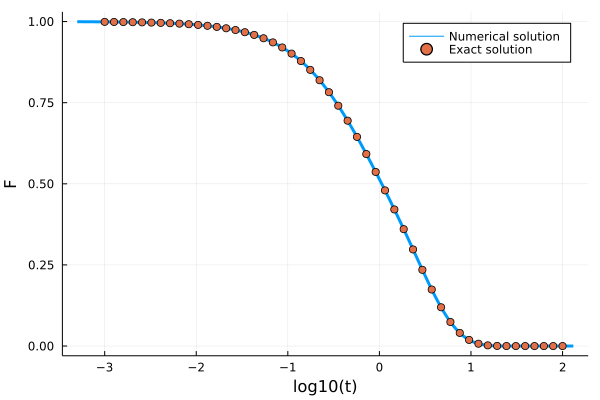
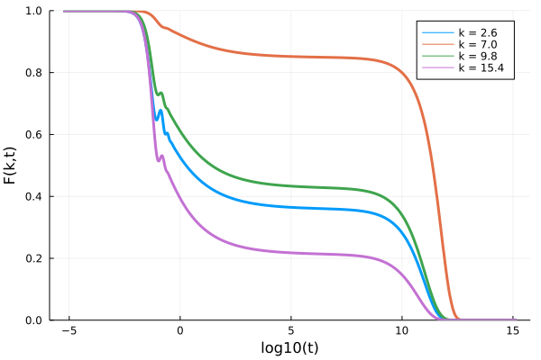
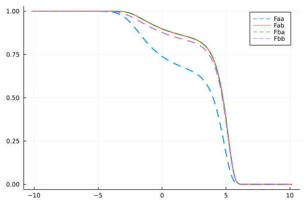
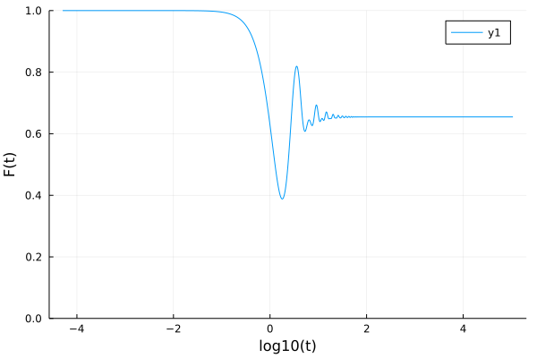

Kernels
A memory kernel kernel is an instance of a type of which MemoryKernel is a supertype. It can be called like out = evaluate_kernel(kernel, F, t). Additionally, when F is a mutable container like a Vector, it can be called like evaluate_kernel!(out, kernel, F, t) in which case it will mutate the elements of the temporary array out. Below we list the memory kernels that this package defines and give some examples of how to use them.
Schematic Kernels
This package includes a couple of schematic memory kernels.
1. ExponentiallyDecayingKernel
The ExponentiallyDecayingKernel implements the kernel $K(t) = λ \exp(-t/τ)$. It has fields λ <: Number and τ <: Number.
Example
The integro-differential equation with this memory kernel actually has an analytic solution for $\tau=1$, $\alpha=0$ , $\beta=1$, and $\gamma=1$. It is given by
\[F(t) = \frac{e^{-\frac{t}{2}\left( \lambda + \sqrt{\lambda(\lambda+4)} + 2\right)}}{2 \sqrt{\lambda (\lambda +4)}}\left(\sqrt{\lambda(\lambda+4)} \left(e^{\sqrt{\lambda(\lambda+4)} t}+1\right)+\lambda \left(e^{\sqrt{\lambda(\lambda+4)} t}-1\right)\right)\]
F0 = 1.0; ∂F0 = 0.0; α = 0.0; β = 1.0; γ = 1.0; δ = 0.0; λ = 1.0; τ = 1.0;
kernel = ExponentiallyDecayingKernel(λ, τ)
problem = MemoryEquation(α, β, γ, δ, F0, ∂F0, kernel)
solver = TimeDoublingSolver(Δt=10^-3, t_max=10.0^2, verbose=false, N = 128, tolerance=10^-10, max_iterations=10^6)
sol = solve(problem, solver)
t_analytic = 10 .^ range(-3, 2, length=50)
F_analytic = @. (exp(-0.5*(3+sqrt(5))* t_analytic)*(exp(sqrt(5)*t_analytic) * (1+sqrt(5))-1+sqrt(5)))/(2sqrt(5))
using Plots
p = plot(log10.(get_t(sol)), get_F(sol), label="Numeric solution", lw=3)
scatter!(log10.(t_analytic), F_analytic, label="Exact solution", ylabel="F", xlabel="log10(t)")
SchematicF1Kernel
The SchematicF1Kernel implements the kernel $K(t) = ν F(t)$. It has one field ν <: Number.
Example
The integro-differential equation with this memory kernel also has an analytic solution for $\alpha=0$ , $\beta=1$, and $\nu=1$. It is given by
\[F(t) = e^{-2t}\left(I_0(2t) + I_1(2t) \right)\]
in which $I_k$ are modified Bessel functions of the first kind.
F0 = 1.0; ∂F0 = 0.0; α = 0.0; β = 1.0; γ = 1.0; ν = 1.0; δ = 0.0
kernel = SchematicF1Kernel(ν)
problem = MemoryEquation(α, β, γ, δ, F0, ∂F0, kernel)
solver = TimeDoublingSolver(Δt=10^-3, t_max=10.0^2, verbose=false, N = 100, tolerance=10^-14, max_iterations=10^6)
sol = solve(problem, solver)
using Plots, SpecialFunctions
t_analytic = 10 .^ range(-3, 2, length=50)
F_analytic = @. exp(-2*t_analytic)*(besseli(0, 2t_analytic) + besseli(1, 2t_analytic))
plot(log10.(get_t(sol)), get_F(sol), label="Numerical Solution", ylabel="F", xlabel="log10(t)", lw=3)
scatter!(log10.(t_analytic), F_analytic, label="Exact Solution")
SchematicF2Kernel
The SchematicF2Kernel implements the kernel $K(t) = ν F(t)^2$. It has one field ν <: Number.
SchematicF123Kernel
The SchematicF123Kernel implements the kernel $K(t) = \nu_1 F(t) + \nu_2 F(t)^2 + \nu_3 F(t)^3$. It has fields ν1 <: Number, ν2 <: Number, and ν3 <: Number.
Example
kernel = SchematicF123Kernel(3.0, 2.0, 1.0);
F = 2; t = 0;
evaluate_kernel(kernel, F, t) # returns 22.0 = 3*2^1 + 2*2^2 + 1*2^3InterpolatingKernel
The InterpolatingKernel implements a kernel that interpolates memory kernel data. It is initialized by calling kernel = InterpolatingKernel(t, M, k=k) where t is a Vector of time points, M is a vector of corresponding memory kernel values, and k is the integer degree of polynomial interpolation (default=1). This kernel is implemented using Dierckx.Spline1D. See Dierckx.jl for more information.
SchematicDiagonalKernel
The SchematicDiagonalKernel implements the kernel $K_{ij}(t) = \delta_{ij} \nu_i F_i(t)^2$. It has one field ν which must be either a Vector or an SVector. When called, it returns Diagonal(ν .* F .^ 2), i.e., it implements a non-coupled system of SchematicF2Kernels.
SchematicMatrixKernel
The SchematicMatrixKernel implements the kernel $K_{ij}(t) = \sum_k \nu_{ij} F_k(t) F_j(t)$. It has one field ν which must be either a Matrix or an SMatrix.
SjogrenKernel
The SjogrenKernel implements the kernel $K_{1}(t) = \nu_1 F_1(t)^2$, $K_{2}(t) = \nu_2 F_1(t) F_2(t)$. It has two fields ν1 and ν2 which must both be of the same type. Consider using Static Vectors for performance.
Example:
using StaticArrays
α = 1.0
β = 0.0
γ = 1.0
δ = 0.0
ν1 = 2.0
ν2 = 1.0
F0 = @SVector [1.0, 1.0]
∂F0 = @SVector [0.0, 0.0]
kernel = SjogrenKernel(ν1, ν2)
eq = MemoryEquation(α, β, γ, δ, F0, ∂F0, kernel)
sol = solve(eq)TaggedSchematicF2Kernel
The TaggedSchematicF2Kernel implements a memory kernel $K(t) = \nu F(t) F_c(t)$, where $F_c(t)$ is a correlator that the tagged one couples to. It must be a solution of an earlier schematic MCT equation. Make sure to use the same solver settings for both solves.
Example:
F0 = 1.0
∂F0 = 0.0
α = 1.0
β = 0.0
γ = 1.0
δ = 0.0
ν1 = 2.0
ν2 = 1.0
kernel = SchematicF2Kernel(ν1)
eq = MemoryEquation(α, β, γ, δ, F0, ∂F0, kernel)
sol = solve(eq)
taggedkernel = TaggedSchematicF2Kernel(ν2, sol)
tagged_eq = MemoryEquation(α, β, γ, δ, F0, ∂F0, taggedkernel)
tagged_sol = solve(tagged_eq);This example is (less performantly) equivalent to the example of the Sjogren kernel above.
Mode-Coupling Theory
The mode-coupling theory equation reads
\[\ddot{F}(k,t) + \Omega(k)F(k,t) + \int_0^td\tau K(t-\tau, k)\dot{F}(k,\tau)=0\]
in which $\Omega(k) = k^2 k_B T/mS(k)$, and
\[K(k,t) =\frac{\rho k_BT}{16\pi^3 m} \int d\mathbf{q} V(\mathbf{k}, \mathbf{q})^2F(q, t)F(|\mathbf{k}-\mathbf{q}|,t)\]
in which the vertex $V(\textbf{k}, \textbf{q}) = (\textbf{k}\cdot\textbf{q})c(q)/k+(\textbf{k}\cdot(\textbf{k}-\textbf{q})c(|\textbf{k}-\textbf{q}|)/k$. For more details and the meaning of the symbols, see [1, 2].
This memory kernel integral is discretised as follows:
\[\int d\textbf{q}f(q, |\textbf{k}-\textbf{q}|) = 2\pi\int_0^\infty dq q^2 \int_0^\pi d\theta \sin \theta f(q, |\textbf{k}-\textbf{q}|) = \frac{2\pi}{k}\int_0^\infty dq \int_{|k-q|}^{k+q}dp pq f(q, p) \approx \frac{2\pi \Delta k^2}{k_i}\sum_{j=1}^{N_k} \sum_{l=|j-i|+1}^{j+i-1} \frac{p_l q_j}{k_i}f(q_j, p_l).\]
in which $p = |\textbf{k}-\textbf{q}|$, and wave numbers $k$, $q$ and $p$ are discretized on the equidistant grid $k_i = (i_k-\frac{1}{2})\Delta k$ where $i_k = 1, 2, 3, \ldots, N_k$. The double sum is then performed for all $k$ using Bengtzelius' trick, yielding a fast $O(N_k^2)$ algorithm.
Example
"""
find_analytical_C_k(k, η)
Finds the direct correlation function given by the
analytical Percus-Yevick solution of the Ornstein-Zernike
equation for hard spheres for a given volume fraction η.
Reference: Wertheim, M. S. "Exact solution of the Percus-Yevick integral equation
for hard spheres." Physical Review Letters 10.8 (1963): 321.
"""
function find_analytical_C_k(k, η)
A = -(1 - η)^-4 *(1 + 2η)^2
B = (1 - η)^-4* 6η*(1 + η/2)^2
D = -(1 - η)^-4 * 1/2 * η*(1 + 2η)^2
Cₖ = @. 4π/k^6 *
(
24*D - 2*B * k^2 - (24*D - 2 * (B + 6*D) * k^2 + (A + B + D) * k^4) * cos(k)
+ k * (-24*D + (A + 2*B + 4*D) * k^2) * sin(k)
)
return Cₖ
end
"""
find_analytical_S_k(k, η)
Finds the static structure factor given by the
analytical Percus-Yevick solution of the Ornstein-Zernike
equation for hard spheres for a given volume fraction η.
"""
function find_analytical_S_k(k, η)
Cₖ = find_analytical_C_k(k, η)
ρ = 6/π * η
Sₖ = @. 1 + ρ*Cₖ / (1 - ρ*Cₖ)
return Sₖ
end
# We solve MCT for hard spheres at a volume fraction of 0.51591
η = 0.51591; ρ = η*6/π; kBT = 1.0; m = 1.0
Nk = 100; kmax = 40.0; dk = kmax/Nk; k_array = dk*(collect(1:Nk) .- 0.5)
Sₖ = find_analytical_S_k(k_array, η)
∂F0 = zeros(Nk); α = 1.0; β = 0.0; γ = @. k_array^2*kBT/(m*Sₖ); δ = 0.0
kernel = ModeCouplingKernel(ρ, kBT, m, k_array, Sₖ)
problem = MemoryEquation(α, β, γ, δ, Sₖ, ∂F0, kernel)
solver = TimeDoublingSolver(Δt=10^-5, t_max=10.0^15, verbose=false,
N = 8, tolerance=10^-8)
sol = @time solve(problem, solver);
# 3.190870 seconds (377.93 k allocations: 106.456 MiB, 0.42% gc time)
p = plot(xlabel="log10(t)", ylabel="F(k,t)", ylims=(0,1))
for ik = [7, 18, 25, 39]
Fk = get_F(sol, :, ik)
plot!(p, log10.(get_t(sol)), Fk/Sₖ[ik], label="k = $(k_array[ik])", lw=3)
end
p
References
[1] Reichman, David R., and Patrick Charbonneau. "Mode-coupling theory." Journal of Statistical Mechanics: Theory and Experiment 2005.05 (2005): P05013.
[2] Janssen, Liesbeth MC. "Mode-coupling theory of the glass transition: A primer." Frontiers in Physics 6 (2018): 97.
TaggedModeCouplingKernel
Let's say we have just solved the mode-coupling equations, and we now want to include also a tagged particle solution (to find the self-intermediate scattering function). This function satisfies
\[\ddot{F}_s(k,t) + \frac{k^2 k_BT}{m} F_s(k,t) + \int_0^t d\tau K(k, t-\tau)\dot{F}_s(k, \tau)=0,\]
in which
\[K(k,t) = \frac{\rho k_BT}{8\pi^3 m}\int d\mathbf{q} V(\mathbf{k}, \mathbf{q})^2 F(q, t)F_s(|\mathbf{k}-\mathbf{q}|,t)\]
where
\[V(\textbf{k}, \textbf{q}) = (\textbf{k}\cdot\textbf{q})c(q)/k = \frac{k^2+q^2-p^2}{2k} \cdot c(q),\]
are the tagged vertices. This is done using the TaggedModeCouplingKernel.
Example (excluding the code from collective MCT):
taggedF0 = ones(Nk); tagged∂F0 = zeros(Nk); α = 1.0; β = 0.0; γ = @. k_array^2*kBT/m; δ = 0.0
taggedkernel = TaggedModeCouplingKernel(ρ, kBT, m, k_array, Sₖ, sol)
taggedequation = MemoryEquation(α, β, γ, δ, taggedF0, tagged∂F0, taggedkernel)
taggedsol = solve(taggedequation, solver)Mean squared displacement (MSD)
From the tagged particle dynamics we just computed, we can evaluate the MSD, as a low k limit. The equations that it satisfies are
\[\ddot{\delta r^2}(t) - \frac{6 k_BT}{m} + \int_0^t d\tau K(k, t-\tau)\delta\dot{ r}^2(\tau)=0,\]
where
\[K(t) = \frac{\rho k_BT}{6\pi^2 m}\int_0^\infty dq q^4c(q)^2F(q,t)F_s(q,t).\]
This kernel is implemented in the MSDModeCouplingKernel
Example:
MSD0 = 0.0; dMSD0 = 0.0; α = 1.0; β = 0.0; γ = 0.0; δ = -6.0*kBT/m;
msdkernel = MSDModeCouplingKernel(ρ, kBT, m, k_array, Sₖ, sol, taggedsol)
msdequation = MemoryEquation(α, β, γ, δ, MSD0, dMSD0, msdkernel)
msdsol = solve(msdequation, solver)
plot(log10.(msdsol.t), log10.(msdsol.F), xlabel="log(t)", ylabel="log(MSD(t))", xlims=(-5,15), label=false)
Multi-component Mode-Coupling Theory
The multi-component mode-coupling theory equation reads
\[\ddot{F}_{\alpha\beta}(k,t) + \Omega^2_{\alpha\gamma}(k)F_{\gamma\beta}(k,t) + \int_0^td\tau K_{\alpha\gamma}(t-\tau, k)\dot{F}_{\gamma\beta}(k, \tau)=0\]
in which $\Omega^2_{\alpha\gamma} = k^2 k_B T x_\alpha/m_\alpha \cdot \left(S^{-1}\right)_{\alpha\gamma}(k)$, and $(\textbf{S})^{-1}(k) = (\frac{\delta_{\alpha\beta}}{x_\alpha} - \rho c_{\alpha\gamma}(k))$. The memory kernel is given by
\[K_{\alpha\beta}(k,t) =\frac{k_B T \rho}{2 x_\beta m_\alpha (2\pi)^3} \int d\mathbf{q} V_{\mu'\nu'\alpha}(\mathbf{k}, \mathbf{q})F_{\mu\mu'}(q, t)F_{\nu\nu'}(|\mathbf{k}-\mathbf{q}|,t)V_{\mu\nu\beta}(\mathbf{k}, \mathbf{q})\]
in which the vertex $V_{\mu\nu\alpha}(\mathbf{k}, \mathbf{q}) = (\textbf{k}\cdot\textbf{q})c_{\alpha\mu}(q)\delta_{\alpha\nu}/k+(\textbf{k}\cdot(\textbf{k}-\textbf{q})c_{\alpha\nu}(|\textbf{k}-\textbf{q}|)\delta_{\alpha\mu}/k$. Here, the Greek indices indicate species labels, and we have adopted the convention that we sum over repeated indices. This memory kernel has also been implemented using the Bengtzelius' trick. It requires $O(N_k^2 N_s^2)$ storage and runs in $O(N_k^2 N_s^4)$ in which $N_s$ is the number of species.
Numerically, the correlator $F_{\alpha\beta}(k)$ is implemented as a Vector of length Nk of which each of the elements is a small Ns x Ns static matrix. This means that this is also the expected form of the initial condition. If, instead you have the data in a matrix format where each element of the matrix is a list of k-vales, use the convert_multicomponent_structure_factor(S) function to convert it into the right format, see the API page. All symbols have the same meaning as those presented in "Weysser, F., Puertas, A. M., Fuchs, M., & Voigtmann, T. (2010). Structural relaxation of polydisperse hard spheres: Comparison of the mode-coupling theory to a Langevin dynamics simulation. Physical review E, 82(1), 011504."
Example
using StaticArrays, LinearAlgebra, DelimitedFiles
# number of species Ns, number of wave numbers Nk, volume fraction η
# thermal energy kBT and mass m
Ns = 2; Nk = 100; η = 0.515; kBT = 1.0; m = ones(Ns)
particle_diameters = [0.8,1.0]
x = [0.2,0.8] # concentration fraction
# total density
ρ_all = 6η/(π*sum(x .* particle_diameters .^3))
ρ = ρ_all * x
kmax = 40.0; dk = kmax/Nk
k_array = dk*(collect(1:Nk) .- 0.5)
# data can be found in the \test\ folder of the source code
Sₖdata = reshape(readdlm("test/Sk_MC.txt"), (2,2,100))
# convert the data to the Vector of SMatrix format
Sₖ = [@SMatrix(zeros(Ns, Ns)) for i = 1:Nk]
for i = 1:Nk
Sₖ[i] = Sₖdata[:, :, i]
end
S⁻¹ = inv.(Sₖ)
J = similar(Sₖ) .* 0.0
for ik = 1:Nk
J[ik] = kBT*k_array[ik]^2 * x ./ m .* I(Ns)
end
F₀ = copy(Sₖ)
∂ₜF₀ = [@SMatrix(zeros(Ns, Ns)) for i = 1:Nk]
α = 1.0
β = 0.0
Ω2 = similar(Sₖ)
for ik = 1:Nk
Ω2 .= J.*S⁻¹
end
δ = @SMatrix zeros(Ns, Ns)
kernel = MultiComponentModeCouplingKernel(ρ, kBT, m, k_array, Sₖ)
problem = MemoryEquation(α, β, Ω2, δ, F₀, ∂ₜF₀, kernel)
solver = TimeDoublingSolver(verbose=false, N=16, tolerance=10^-8, max_iterations=10^8)
sol = solve(problem, solver)
ik = 19
k = k_array[ik]
t = get_t(sol)
Fk_11 = get_F(:, ik, (1,1))
Fk_12 = get_F(:, ik, (1,2))
Fk_21 = get_F(:, ik, (2,1))
Fk_22 = get_F(:, ik, (2,2))
p = plot(log10.(t), Fk_11/Sₖ[ik][1,1], ls=:dash, lw=2, color=1, label="Faa(k=$k, t)")
plot!(log10.(t), Fk_12/Sₖ[ik][1,2], lw=2, color=2, label="Fab(k=$k, t)")
plot!(log10.(t), Fk_21/Sₖ[ik][2,1], ls=:dash, lw=2, color=3, label="Fba(k=$k, t)")
plot!(log10.(t), Fk_22/Sₖ[ik][2,2], ls=:dash, lw=2, color=4, label="Fbb(k=$k, t)")
Tagged multi-compontent mode-coupling theory
The tagged multi-component mode-coupling theory equation reads
\[\dot{F}_{s}(k,t) + \Omega_s^2(k)F_{s}(k,t) + \int_0^td\tau K_{s}(t-\tau, k)\dot{F}_{s}(k, \tau)=0\]
for a particle of species $s$ in which $\Omega_{s}^2 = k^2 k_B T/m_s$. The memory kernel is given by
\[K_{s}(k,t) =\frac{k_B T \rho}{k^3m_s (2\pi)^3} \sum_{\alpha\beta}\int d\mathbf{q} \left(\textbf{k}\cdot\textbf{q}\right)^2C_{s\alpha}(q)C_{s\beta}(q)F_{\alpha\beta}(q, t)F_{s}(|\mathbf{k}-\mathbf{q}|,t).\]
Here $F_{s}$ is the tagged correlator, with initial condition $F_{s}(t=0)=1$, and $F_{\alpha\beta}$ is the collective correlator which can be obtained as explained in the previous section.
Example
# we look for the tagged correlator of the second species.
s = 2
α = 1.0
β = 0.0
γ = [kBT * k_array[ik]^2 ./ m[s] for ik = 1:Nk]
δ = 0.0
F0 = [1.0 for ik = 1:Nk]
dF0 = [0.0 for ik = 1:Nk]
taggedkernel = TaggedMultiComponentModeCouplingKernel(s, ρ, kBT, m, k_array, Sₖ, sol);
taggedequation = MemoryEquation(α, β, γ, δ, F0, dF0, taggedkernel);
taggedsol = solve(taggedequation, solver)In order to solve the tagged particle equation for all species, one should loop over the above code, changing specie index $s$ from 1 to the number of species.
Multi-component mean-squared displacements
The equation for the mean squared displacement in a multicomponent system reads
\[\delta \dot{r}_s^2(t) -\frac{6k_BT}{m_s} + \int_0^td\tau K_{s}(t-\tau)\delta \dot{r}_s^2(\tau)=0\]
for a particle of species $s$. The memory kernel is given by
\[K_s(t) = \frac{\rho k_BT}{6\pi^2 m_s}\sum_{\alpha\beta}\int_0^\infty dq q^4c_{s\alpha}(q)c_{s\beta}(q)F_{\alpha\beta}(q,t)F^{(s)}_s(q,t).\]
Here $\delta r_s^2(t)$ is the MSD of species s, with initial condition $\delta r_s^2(t=0)=0$, and $\delta \dot{r}_s^2(t=0)=0$. This kernel is implemented using the MSDMultiComponentModeCouplingKernel
Example
# we look for the tagged correlator of the second species.
s = 2
α = 1.0
β = 0.0
γ = 0.0
δ = -6*kBT / m[s]
msd0 = 0.0
dmsd0 = 0.0
msdkernel = MSDMultiComponentModeCouplingKernel(s, ρ, kBT, m, k_array, Sₖ, sol, taggedsol);
msdequation = MemoryEquation(α, β, γ, δ, msd0, dmsd0, msdkernel);
msdsol = solve(msdequation, solver)Defining custom kernels
In order to define a custom kernel, one has to overload ModeCouplingTheory.evaluate_kernel(k::MyCustomKernel, F, t), and optionally ModeCouplingTheory.evaluate_kernel!(out, k::MyCustomKernel, F, t) for better performance for mutable F.
Example 1
Let's define a custom scalar kernel that evaluates $K(t) = \alpha F(t)^{F(t)}$. First, we define a MyWeirdKernel<:MemoryKernel type that holds the value of the parameter:
using ModeCouplingTheory
import ModeCouplingTheory.MemoryKernel
struct MyWeirdKernel <: MemoryKernel
α :: Float64
end
kernel = MyWeirdKernel(2.5)Now, we can define the evaluation of this memory kernel
import ModeCouplingTheory.evaluate_kernel
function evaluate_kernel(kernel::MyWeirdKernel, F, t)
return kernel.α*F^F
endThat's it! We can now use it like any other memory kernel to solve the equation:
problem = MemoryEquation(1.0, 0.0, 1.0, 0.0, 1.0, 0.0, kernel)
solver = TimeDoublingSolver(Δt = 10^-4, t_max=10.0^5)
sol = solve(problem, solver)
using Plots
p = plot(log10.(sol.t), sol.F, ylims=(0,1), ylabel="F(t)", xlabel="log10(t)")
Example 2
For a slightly more complex example, let's define the tagged-particle mode-coupling theory memory kernel (say we forgot that it is also a built-in kernel). The equation is given by:
\[\ddot{F}_s(k,t) + \frac{k^2 k_BT}{m} F_s(k,t) + \int_0^t d\tau K(k, t-\tau)\dot{F}_s(k, \tau)=0,\]
in which
\[K(k,t) = \frac{\rho k_BT}{8\pi^3 m}\int d\mathbf{q} V(\mathbf{k}, \mathbf{q})^2 F(q, t)F_s(|\mathbf{k}-\mathbf{q}|,t)\]
where
\[V(\textbf{k}, \textbf{q}) = (\textbf{k}\cdot\textbf{q})c(q)/k = \frac{k^2+q^2-p^2}{2k} \cdot c(q),\]
where $p = |\textbf{k} - \textbf{q}|$. Note that in the equation for the memory kernel, the solution of collective mode-coupling theory $F(k,t)$ appears (without subscript $s$). The most straightforward way of solving the tagged-particle equation therefore is to solve the full collective equation first, and use the result in the memory kernel of the tagged-particle motion. So, first we quickly solve MCT:
using ModeCouplingTheory, LinearAlgebra
η = 0.51591; ρ = η*6/π; kBT = 1.0; m = 1.0
Nk = 100; kmax = 40.0; dk = kmax/Nk; k_array = dk*(collect(1:Nk) .- 0.5)
# We use the Percus-Yevick solution to the structure factor that can be found above.
Sₖ = find_analytical_S_k(k_array, η)
∂F0 = zeros(Nk); α = 1.0; β = 0.0; γ = @. k_array^2*kBT/(m*Sₖ); δ = 0.0
kernel = ModeCouplingKernel(ρ, kBT, m, k_array, Sₖ)
problem = MemoryEquation(α, β, γ, δ, Sₖ, ∂F0, kernel)
solver = TimeDoublingSolver(Δt=10^-5, t_max=10.0^15, verbose=false,
N = 8, tolerance=10^-8)
sol = @time solve(problem, solver);Now, we need to construct the tagged-particle memory kernel for the self intermediate scattering function Fs. When called with evaluate_kernel(kernel, Fs, t) it needs some way to access the collective F at the right time. To make that easy, we create a dictionary that maps the values in t to their respective indices.
tDict = Dict(zip(t, eachindex(t)))
# tdict[t[8]] == 8Now we can construct a memory kernel like above. For performance reasons, we also implement the in-place evaluate_kernel!(out, kernel, Fs, t). The discrete equation that we must implement is given by
\[K(k_i,t) = \frac{\rho k_B T \Delta k^2}{4 \pi^2 m} \sum_{j=1}^{N_k} \sum_{l=|j-i|+1}^{j+i-1} \frac{p_l q_j}{k_i} V^2(k_i, q_j, p_l)F(k_j, t)F_s(k_l, t).\]
This memory kernel can now be straightforwardly implemented as follows:
import ModeCouplingTheory.MemoryKernel
struct TaggedMCTKernel <: MemoryKernel
V²::Array{Float64, 3}
k_array::Vector{Float64}
prefactor::Float64
F::Matrix{Float64}
tDict::Dict{Float64, Int64}
end
# The constructor for the TaggedMCTKernel
function TaggedMCTKernel(ρ, kBT, m, k_array, Cₖ, t, F)
tDict = Dict(zip(t, eachindex(t)))
Δk = k_array[2] - k_array[1]
prefactor = ρ*kBT*Δk^2/(4*π^2*m)
Nk = length(k_array)
# calculate the vertices
V² = zeros(Nk, Nk, Nk)
for i = 1:Nk, j = 1:Nk, l = 1:Nk # loop over k, q, p
k = k_array[i]
q = k_array[j]
cq = Cₖ[j]
p = k_array[l]
if abs(j-i)+1 <= l <= j+i-1
V²[l, j, i] = (cq * (k^2 + q^2 - p^2)/(2k))^2
end
end
return TaggedMCTKernel(V², k_array, prefactor, F, tDict)
end
Now to evaluate the kernel, we first write the in-place version of the code, that mutates its first argument. Note also that, since the mermory kernel is multiplied with a vector F to produce something of the same type of F, it has to be encoded as a matrix, with on the diagonal the discretised wave-number dependent memory kernel.
import ModeCouplingTheory.evaluate_kernel!
function evaluate_kernel!(out::Diagonal, kernel::TaggedMCTKernel, Fs, t)
out.diag .= zero(eltype(out.diag)) # set the output array to zero
it = kernel.tDict[t] # find the correct index corresponding to t
k_array = kernel.k_array
Nk = length(k_array)
for i = 1:Nk, j = 1:Nk, l = 1:Nk # loop over k, q, p
k = k_array[i]
q = k_array[j]
p = k_array[l]
out.diag[i] += p*q/k * kernel.V²[l, j, i] * kernel.F[j, it] * Fs[l]
end
out.diag .*= kernel.prefactor
end
import ModeCouplingTheory.evaluate_kernel
function evaluate_kernel(kernel::TaggedMCTKernel, Fs, t)
out = Diagonal(similar(Fs)) # we need it to produce a diagonal matrix
evaluate_kernel!(out, kernel, Fs, t) # call the inplace version
return out
endNow we can finally solve the tagged equation:
Cₖ = find_analytical_C_k(k_array, η)
F0 = ones(Nk); ∂F0 = zeros(Nk); α = 1.0; β = 0.0; γ = @. k_array^2*kBT/m; δ = 0.0
taggedkernel = TaggedMCTKernel(ρ, kBT, m, k_array, Cₖ, t, F)
taggedproblem = MemoryEquation(α, β, γ, δ, F0, ∂F0, taggedkernel)
taggedsolver = TimeDoublingSolver(Δt=10^-5, t_max=10.0^15,
N = 8, tolerance=10^-8) # it is important we use the same settings for Δt, t_max and N
sol_s = @time solve(taggedproblem, taggedsolver)
using Plots
p = plot(xlabel="log10(t)", ylabel="Fₛ(k,t)", ylims=(0,1))
for ik = [7, 18, 25, 39]
Fk = get_F(sol_s, :, ik)
plot!(p, log10.(get_t(sol_s)), Fk, label="k = $(k_array[ik])", lw=3)
end
p
This implementation of the tagged-particle memory kernel is an order of magnitude slower than the built-in collective one, and can be made much more performant by Bengtzelius' trick. For the purposes of this example, however, we do not pursue this any further. For help with implementing your own kernel, please file an issue.
Bengtzelius' Trick
Bengtzelius' trick is a fast way to evaluate the integral $I(k) = \int d \mathbf{q} A(q, |\mathbf{k}-\mathbf{q}|)$. Very briefly: after discretisation of the integral, one is left with terms such as $T_{i}[A]=\sum_{j=1}^{N_k}\sum_{l=|j-i|+1}^{i+j-1} A(p_{l},q_{j})$ which are largely independent of $i$. Because of this, one can calculate $T_{i}[A]$ from $T_{i-1}[A]$ in order $N_k$ operations. The recurrence relation that allows one to do so is given by
\[T_{i}[A] = T_{i-1}[A] + \sum_{j=1}^{N_k-i+1}(A(j, j+i-1)+A(j+i-1, j)) - \sum_{j=1}^{i-1}A(j,i-j)\]
with initial condition
\[T_{1}[A] = \sum_{j=1}^{N_k}A(j, j).\]